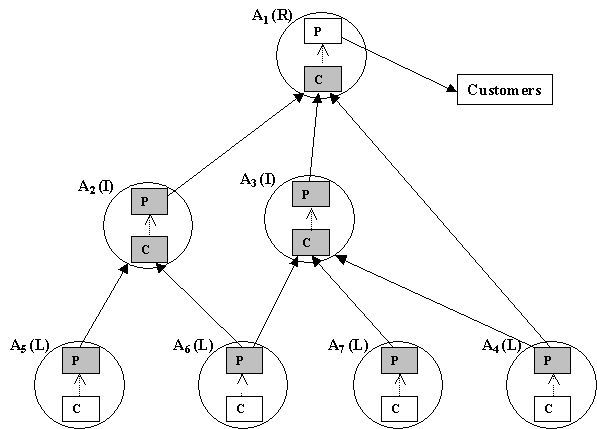
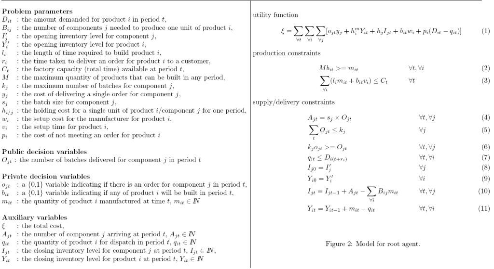
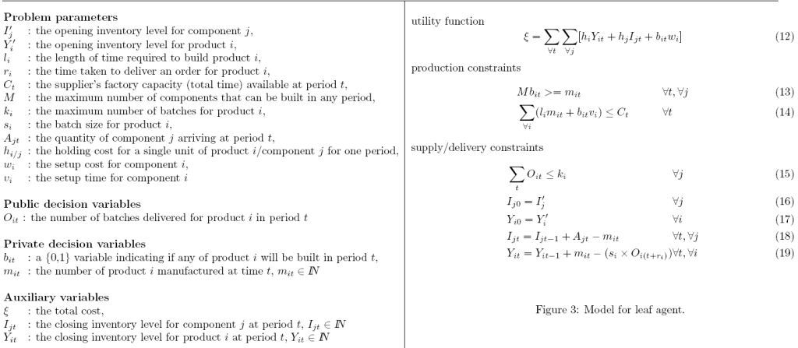
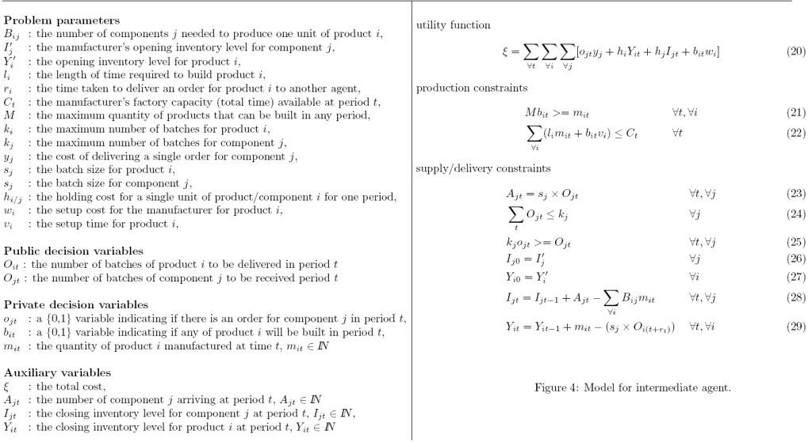
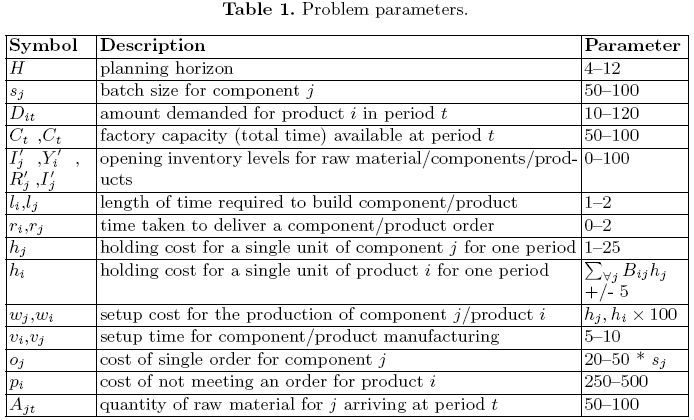

This work is licensed under a Creative Commons Attribution 4.0 International License.
This work is licensed under a Creative Commons Attribution 4.0 International License. Proposed by David A. Burke, Kenneth N. Brown, Mustafa Dogru, Ben Lowe
This benchmark originates from a collaboration between Cork Constraint Computation Centre (Dept. of Computer Science, University College Cork, Ireland) and Bell Labs Ireland (Alcatel-Lucent, Dublin, Ireland) as part of the Centre for Telecommunications Value-chain Research. This work is supported by Science Foundation Ireland under Grant No. 03/CE3/I405.
This specification describes the Supply Chain Coordination (SCC) problem for Distributed Constraint Optimisation. SCC involves the planning and coordinating of production and delivery schedules among several agents (business units). Each agent is responsible for the production of certain finished goods (products - P) from raw materials (components - C) (See Figure 1). Goods move up the supply chain between agents such that products from one agent may be components of another agent. Agents in the problem must agree delivery schedules for the movement of the goods (shaded boxes linked with arrows indicate delivery schedules that must be agreed). There are 3 types of agents:
Each agent also has a local production scheduling problem that must be simultaneously solved. The overall objective of the agents is to coordinate their production and delivery schedules such that the total costs (production, delivery, holding and penalty costs) in the supply chain network are minimised.

At the top of the supply chain is a single root agent producing a number of products over a fixed planning horizon (See Figure 2). In each period t of the planning horizon, the root has a specific demand Dit from customers for each of its products i. To produce the products, the root agent must order components from they agents supplying it components. Components are delivered in batches (e.g. pallet, container or truckload), where sj is the quantity/batch size. A single order Ojt, incurring a fixed cost yj, specifies the number of batches of a particular component j that must be delivered in period t. The root agent must coordinate with the agents that supply it to decide how to schedule the orders/deliveries. When negotiating these schedules, the agents have to consider production constraints. We assume that each agent has a single production facility for producing all products, and there is a setup cost, wi, and time vi associated with starting production of a product. Each product takes a specific length of time to build li. In any period, the agent will decide how much of each product it will build, mit. Given that each product is independent, the sequence of these productions is irrelevant and so can be done one after the other. In this case, there will at be at most one setup cost per period per product, indicated by the \{0,1\} variable bit which is forced to be correctly set according to (2). A capacity constraint (3) states that the total production in any period cannot exceed the total factory capacity, Ct, for that period. The closing component inventory in any period is equal to the previous days closing inventory plus the number of components arriving less the number of components used in that period — what components go into each product is defined by the bill of materials, Bij (10). The closing product inventory is calculated in a similar manner (11). Note that the latter two constraints also have the effect of ensuring that qit is less than or equal to the products available on any particular day. Holding costs are charged for each item in storage and we assume that these costs incorporate charges for both excess and obsolete items. The number of components that arrive is dependent on the assignment to Ojt (4), which is also constrained by (5). The variable ojt is used identify the periods in which order costs are incurred (6). The quantity of products dispatched in any period cannot be greater than the demand from customers on the corresponding delivery date (dispatch date + delivery time) (7). We assume that the root will deliver its products on time or not at all. However, there is a cost associated with non-delivery (i.e. profits missed out on). The utility function, (1), calculates costs that arise for the agent from (i) order costs (ii) holding costs (iii) missed customer orders; and (iv) production setup.

The model for a leaf agent is described in Figure 3. The agent has a decision variable Ojt, which is constrained to be equal to the corresponding variable of the agent(s) it is supplying products to. The leaf agent’s internal problem is similar to that of the root agent, except we are assuming that a known, fixed amount of components for manufacturing products will arrive in each time period Ajt (supply constraints). The supplier has a capacity constraint (14) on what it can produce in any given period. The inventory at the end of any period has to be non-negative, when the number of products dispatched to the receiving agents are subtracted — the number of products dispatched in each period is calculated to be the number of batches that have to be sent (taking into account the delivery time) multiplied by the batch size (19). The component inventory is also constrained to be non-negative (18). The setup costs are calculated as in the root agent model using the variable bit (13). The supplier’s utility function, (12), is the sum of the holding costs and production setup costs.

The intermediate agent (Figure 4), both receives components from, and delivers products to other agents in the problem. As such, the agent has two public decision variables: Ojt - orders made for components; and Oit orders received for its products. The remainder of the model is a hybrid of the root and leaf agent models. The utility function, (20), calculates costs that arise for the agent from (i) order costs (ii) holding costs and production setup.

We make a number of assumptions in this scenario, but it is possible to extend it to consider more details if required. Production scheduling could be extended to allow multiple production facilities, dependencies, etc., if desired. We assume unlimited storage space, but the scenario can easily be extended to include storage limits. A more sophisticated cost model with customers, incorporating various late-delivery charges could also be included if necessary. Finally, the agent models described here assume that there is a single source for each component, and a single destination for each product, but again, it is easy to modify the models to allow alternate supply chain.
To instantiate the models we provide parameter settings, chosen to be representative of real-world scenarios, in Table 1. The ranges for each parameter allow a variety of different SCC instances to be considered, e.g. high/low product demand, underconstrained/overconstrained factory capacities, different ratios of holding cost to penalty cost etc. Specific problem instances are also included in this benchmark and can be found on the main benchmark page.

This work is licensed under a Creative Commons Attribution 4.0 International License.